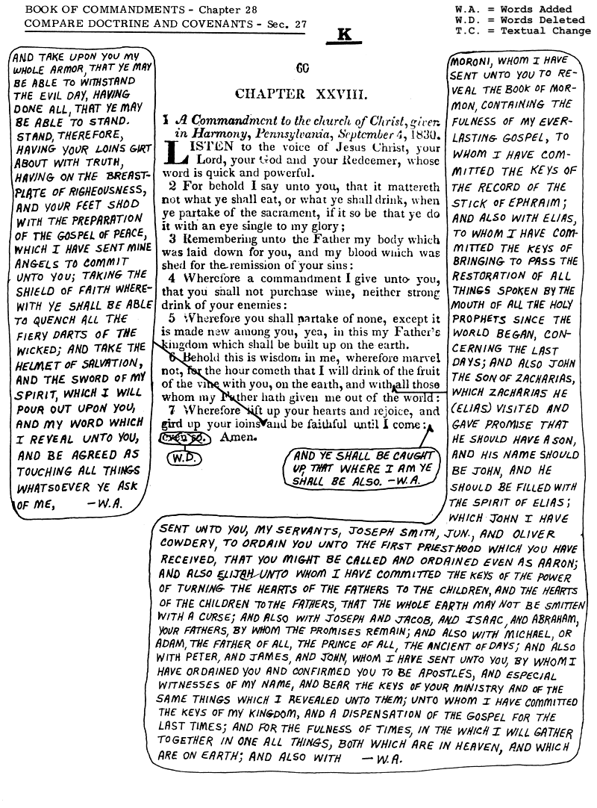

The Historicity of Adam and Eve and Its Significance in the Book of Mormon
The story of Adam and Eve is one of the Bible’s most well-known narratives, appearing in both creation
accounts in Genesis (Chapters 1 and 2) to describe the origin of life on Earth. Traditionally, Adam and Eve
are believed to have been created by God around 4,000 BCE and are regarded as the first human ancestors of
all people.
Most readers are already familiar with this story, which is central to the concept of the "Fall of Man," a
pivotal event necessitating Christ's atonement in Christian theology. Additionally, the narrative of Adam
and Eve plays a significant role in explaining the eventual population of the Earth, a theme that carries
importance throughout the Bible and the Book of Mormon due to the emphasis on lineage.
However, many secular scholars, and even some biblical scholars, consider the Adam and Eve story to be an
etiological myth—an allegorical tale intended to explain human origins. This view is supported by
advancements in science, history, and analysis of the biblical text.
In Mormonism, however, the story of Adam and Eve must be understood as a literal, historical event. This is
due to the extensive use of the Adam and Eve narrative in key LDS texts, including the Book of Mormon, the
Book of Abraham, and the Doctrine and Covenants. Joseph Smith, the founder of the LDS Church, not only
references Adam in the Book of Mormon but also identifies Adam as the "Ancient of Days" mentioned in the
Bible—an interpretation that most biblical scholars believe refers to God, not Adam.
Moreover, Joseph Smith claims to have seen Adam in a vision (D&C 137:5), and Joseph F. Smith reports a
vision of Adam and Eve (D&C 138:38-39). Joseph Smith also reveals the location of Adam and Eve's post-Eden
residence as Adam-ondi-Ahman in Missouri (source), where
early Latter-day Saints settled in 1838. These doctrinal
claims rely on the historicity of Adam and Eve. If their story is indeed an etiological myth, as scholars
suggest, it raises questions about the truth claims of Mormonism and the foundational narratives of the
faith.
Problems with the Historicity of Adam and Eve
As summarized above, the story of Adam and Eve cannot be considered a literal historical event given the
extensive evidence we now have from evolution, genetics, DNA studies, and biblical scholarship. Both secular
and many biblical scholars regard the account as a myth created to explain human origins and to serve as an
introduction to the Bible. While the traditional interpretation dates the events of Adam and Eve to around
4,000 BCE, most biblical scholars now agree that the Pentateuch was compiled much later. The Documentary
Hypothesis, which explores the development of the biblical texts, suggests that Genesis was most
likely
compiled in the 6th or 5th century BCE (Davies, G.I, Introduction to the Pentateuch).
Several methods demonstrate that the Adam and Eve story is not historical, as summarized below:
Evolution
Human evolution indicates that modern Homo sapiens began to evolve in Africa around 315,000 years ago. Human evolutionary roots, however, go back millions of years, as confirmed by DNA analysis and fossil records. Humans today share approximately 99% of their DNA with chimpanzees and bonobos (Science, Bonobos Join Chimps as Closest Human Relatives ). Despite some dismissing evolution as "just a theory," it has been consistently supported by scientific evidence, and as technology advances, the details become sharper without changing the overarching conclusions (Wikipedia. Timeline of human evolution).
Fossil Records
Fossil records show that hominins like Australopithecus afarensis were walking on two limbs as early as 3.5 million years ago. Since then, fossils demonstrate a continuous evolution in human skeletal structures, leading to modern humans. This is a brief overview, but I strongly recommend further reading on human evolution. The abundance of evidence against the idea that humans began in their current form, with the ability to speak an "Adamic" language, is clear. Contrary to claims that these issues are too complex for non-experts, the implications of evolution and fossil evidence are accessible to anyone willing to learn more (Britannica. The fossil evidence).
DNA Evidence
DNA studies further support the evidence of human evolution over millions of years, tracing our ancestry far
beyond the timeline of the traditional Adam and Eve narrative. While Genesis places Adam and Eve’s creation
about 6,000 years ago, a simple DNA test, like those from 23andMe, can trace human ancestry tens of
thousands of years earlier.
For example, my own 23andMe results show that I have less than 2% Neanderthal DNA, with Neanderthals
disappearing around 40,000 years ago. This means my DNA can be traced back at least 34,000 years before the
traditional Adam and Eve timeline. My results even reveal traits I inherited from Neanderthal DNA, such as a
poor sense of direction and a tendency to hoard possessions. These traits have been true throughout my life,
underscoring the fascinating insights that DNA can provide about our ancestors and ourselves.
Looking at DNA in broader terms, scientists can date a “genetic Adam and Eve,” but this does not support the
biblical narrative. The "genetic Adam" and "genetic Eve" lived around 135,000 years ago, and, crucially,
they likely did not live at the same time or place, let alone mate (Live Science.
'Out of Africa' Story Being Rewritten Again). DNA also supports the
theory that humans evolved in Africa and began migrating out of the continent at least 200,000 years ago,
aligning with archaeological findings.
Just as with evolution, DNA evidence is becoming increasingly precise over time. As geneticist Jamie Hanis
Handy mentioned in a Mormon Stories Podcast, advances in DNA technology are akin to upgrading from a
1-megapixel camera to a 100-megapixel camera, sharpening the picture every day. The growing consensus around
DNA’s accuracy presents a significant challenge to the historicity of Adam and Eve.
Ancient Origin Myths
The Epic of Gilgamesh shares several parallels with the Bible, most notably the global flood myth, but also with the Adam and Eve story. In Gilgamesh, the character Enkidu is created from the soil and lives among animals until tempted by a woman. After consuming food, he becomes aware of his nakedness and must leave his previous realm, unable to return. A snake also appears later in the story, stealing a plant of immortality—a clear similarity to the serpent in the Garden of Eden (Epic of Gilgamesh Parallels to the Bible).
Biblical Scholarship
One of the clearest indicators that the Adam and Eve story is not a historical account, and was a later
addition to the Bible, comes from the Bible itself. The creation narrative, including the Garden of Eden
story, originates from the Yahwist (J) source in Genesis 2. While it was initially believed to have been
written in the 7th century BCE, most scholars now place its composition between the 6th and 5th centuries
BCE (Baden, Joel S., J, E, and the Redaction of the Pentateuch). Understanding this
timing is key to
recognizing how the Adam and Eve narrative was likely intended as an origin myth rather than literal
history.
There are two major reasons why this is significant:
-
Fable Elements: The Adam and Eve story contains many features typical of fables, such as a talking snake, a man created from dust, a woman formed from his rib while he is in a deep sleep, and lifespans extending to 930 years (Genesis 5:5). Even the name "Adam" means "man" in Hebrew. These elements suggest that the story was never meant to be understood as literal history in its ancient context, but rather as a symbolic explanation for human origins.
-
Lack of Early References: More importantly, the absence of references to Adam and Eve by early biblical prophets indicates that the story was not widely known or considered central in Old Testament times. Historian John Hamer points out that the earliest prophets, such as Isaiah, Jeremiah, Amos, and Micah, make no mention of Adam and Eve. By contrast, they frequently refer to other key figures like Moses (116 mentions) and David (100 mentions), showing that while they were familiar with many early biblical stories, Adam and Eve were not among them.
Outside of Genesis, Adam and Eve are mentioned only once in Deuteronomy (part of the Pentateuch, which was
compiled around the same time as Genesis), and then sparingly in later texts such as Job (6th century BCE)
and Chronicles (4th century BCE). The late introduction of the Adam and Eve story, coupled with its limited
references thereafter, strongly suggests that it was not regarded as literal history by early biblical
writers, but rather as myth.
Today, the story of Adam and Eve is considered by many to be one of the most crucial events in religious
history, particularly in its role in Christian theology, which connects it to the necessity of the
Atonement. It also plays a central role in the Book of Mormon. However, as Hamer concludes:
“Not only does it not work with this robust theory of evolution, all of the entire fossil record and everything else (genetics, DNA, and all the things that completely track with [those theories]), but the story itself within the Bible itself doesn’t portray itself as the most ancient thing even though as the Bible is now edited it comes first.” (Infants on Thrones podcast: Seven Deadly Heresies. Note: The Adam and Eve conversation is about 56 minutes in )Ultimately, the Adam and Eve story cannot be reconciled with the overwhelming evidence from genetics, DNA, archaeology, and biblical scholarship as a literal, historical event. While many religious traditions have reinterpreted the story as an etiological myth, this proves more challenging within Mormonism, where the story has been extensively used and expanded as a literal event in doctrine.
Problems with the Book of Mormon and Adam and Eve
As mentioned earlier, the Adam and Eve story is referenced only twice in the Old Testament outside the first
five books—in Job and Chronicles. The issue is that this story was unknown to earlier biblical writers like
Isaiah, Jeremiah, and others, even though David and Moses are mentioned over 100 times. If the Adam and Eve
story were a historical event, why would such a monumental occurrence vanish from the biblical narrative,
while other Old Testament figures are repeatedly mentioned?
In the New Testament, references to Adam and Eve become more frequent, which makes sense since the
Pentateuch was widely known by this time. Skipping over references to Adam that establish lineage (as in
Luke and Jude), it's important to note that most New Testament mentions of Adam are linked to early
Christian theology, as seen in Paul’s epistles.
Here are a few of Paul’s references to Adam:
- "For as by one man's disobedience many were made sinners, so by the obedience of one shall many be made righteous." (Romans 5:19 )
- "Indeed, man was not made from woman, but woman from man. " (1 Corinthians 11:8)
- "For as in Adam all die, even so in Christ shall all be made alive. " (1 Corinthians 15:22)
- "And so it is written, The first man Adam was made a living soul; the last Adam was made a quickening spirit." (1 Corinthians 15:45 )
In contrast, the Book of Mormon contains 26 references to Adam, with an additional 28 mentions in the
Doctrine and Covenants. This poses a problem because the church insists on a literal Adam and Eve, and
Joseph Smith expanded upon the story in the Book of Mormon, later incorporating it into his revision of
Genesis, which became the Book of Moses.
According to the Book of Mormon, Nephi killed Laban to obtain the brass plates between 600–592 BCE—around
the time the Pentateuch was likely compiled, based on the documentary hypothesis. While it’s anachronistic
to suggest the brass plates contained Bible texts written in Egyptian, it’s possible that by this
time, Adam
and Eve’s story could have been known. However, it’s highly improbable that these texts would have existed
on metal plates.
A larger issue arises in the Book of Ether, which dates back to around 2200 BCE, yet speaks of Adam:
3 And as I suppose that the first part of this record, which speaks concerning the creation of the world, and also of Adam, and an account from that time even to the great tower, and whatsoever things transpired among the children of men until that time, is had among the Jews—
4 Therefore I do not write those things which transpired from the days of Adam until that time; but they are had upon the plates; and whoso findeth them, the same will have power that he may get the full account. (Eter 1: 3-4p)
As noted, the writers of the Book of Mormon seem aware of ideas that could not have been known during the
periods in which the book claims to take place. While we often hear about anachronistic items and animals in
the Book of Mormon (e.g., horses, steel, chariots), the more problematic anachronisms are the 19th-century
ideas about the Bible that were written before some of the material was even composed, or before
Christianity had developed.
But the issue extends beyond the Book of Mormon. The Book of Abraham references Adam twice in chapter 1 and
recounts the Yahwist version of the Garden of Eden story in chapter 5, reflecting Joseph Smith’s shift from
a single God to a plurality of gods. Once again, Adam and Eve are treated as literal history, even though
the Book of Abraham is said to have been written before 1650 BCE—a thousand years before the Adam and Eve
story was known.
Beyond the scriptures, Joseph Smith claimed to have seen Adam in a vision at the Kirtland temple. In
Doctrine and Covenants 137, Smith records this vision: “I saw father Adam, and Abraham, and Michael.” (The Joseph Smith Papers. Visions, 21 January 1836 [D&C 137] ). This
vision is problematic, not only for its literal portrayal of Adam but because Joseph Smith later declared
that Adam and Michael are the same being, yet he claims to have seen both.
Following Joseph Smith, future prophet Joseph F. Smith also claimed to see Adam and Eve in a vision:
Among the great and mighty ones who were assembled in this vast congregation of the righteous were Father Adam, the Ancient of Days and father of all (Doctrine and Covenants 138: 38)
This vision is problematic for biblical scholarship, beyond the question of Adam’s historicity, as discussed
further below.
Lastly, the church designates a spot in Missouri as Adam-ondi-Ahman, where Joseph Smith claimed Adam and Eve
went after being expelled from the Garden of Eden. This presents several issues, even if we assume Adam and
Eve were historical figures. If their story is not historical, how could Joseph Smith receive a revelation
that Adam and Eve lived exactly where early Saints were settling in Missouri?
The following revelation also incorrectly identifies Adam as the "Ancient of Days," which likely
contributed to the Adam-God doctrine. D&C 116 is brief but states:
Spring Hill is named by the Lord Adam-ondi-Ahman, because, said he, it is the place where Adam shall come to visit his people, or the Ancient of Days shall sit, as spoken of by Daniel the prophet. (Doctrine and Covenants 116: 1)
The issue is that the "Ancient of Days" in Daniel refers to God, not Adam. This becomes clear when reading Daniel in context:
9 ¶ I beheld till the thrones were cast down, and the Ancient of days did sit, whose garment was white as snow, and the hair of his head like the pure wool: his throne was like the fiery flame, and his wheels as burning fire.
10 A fiery stream issued and came forth from before him: thousand thousands ministered unto him, and ten thousand times ten thousand stood before him: the judgment was set, and the books were opened. (Daniel 7: 9-10)
This poses an even greater problem than the Book of Mormon, as Joseph Smith relied on a literal Adam figure, despite the evidence, and placed him into the Bible via revelation from God, which was incorrect. Moreover, Joseph Smith never made the connection between Adam and the “Ancient of Days” until Sidney Rigdon proposed it in May 1834. In the Evening and Morning Star, Rigdon wrote:
In the 24 chapter of Isaiah, and 23 verse, the prophet, after having described one of the greatest desolations ever pronounced on the head of any generation of men, says, "Then the moon shall be confounded, and the sun ashamed, when the Lord of hosts shall reign in mount Zion, and in Jerusalem, and before his ancients gloriously."We have before seen that this reign was to last a thousand years; and his ancients, before whom he was to reign in mount Zion, and in Jerusalem, gloriously, were all the redeemed from among men, of every tongue, language, kindred, and people.
According to Daniel, he (Jesus) was to come to the ancient of days: here he is said to reign before his ancients, that is, all the saints from our father Adam, down; for who could the ancient of days be but our father Adam? surely none other: he was the first who lived in days, and must be the ancient of days. And to whom would the Savior come, but to the father of all the race, and then receive his kingdom, in which he was to reign before, or with his ancients gloriously? Let it here be remarked, that it is said to be in mount Zion, and in Jerusalem, where the Lord is to reign before his ancients gloriously." (THE EVENING AND THE MORNING STAR Vol. II Kirtland, Ohio, May, 1834. No. 20.)
This is a misreading of the Bible, which is why almost no non-LDS scholar accepts the idea of Adam being the
"Ancient of Days." In Daniel, the Son of God approaches the Ancient of Days, suggesting that the Ancient of
Days holds a higher position than the Son of God. This implies that Adam is part of the Godhead, a concept
later taught by Brigham Young.
It’s important to note that Joseph Smith did not make this connection during the production of the Book of
Mormon, nor when translating his revision of the Bible. However, after Sidney Rigdon introduced the idea in
1834, Joseph Smith soon adopted the same teaching.
The vision referenced above occurred in January 1836, but Joseph Smith had already introduced this concept into a revelation when he altered it prior to the release of the Doctrine and Covenants in 1835. In Doctrine and Covenants 27, Joseph Smith made substantial changes to the original revelation, which was initially focused on the sacrament, specifically about only drinking wine that was "made new among you." In these revisions, Smith sought to establish a line of authority from Adam to himself, along with the keys of the priesthood. Among these changes, in the voice of God, Smith added the following: “And also with Michael, or Adam, the father of all, the prince of all, the ancient of days.”

Here, Joseph Smith is modifying an 1830 revelation to incorporate his new theology from 1835, which was
developed after Sidney Rigdon introduced it to him. Smith also learned about the concept of a Melchizedek
priesthood from Rigdon, which was similarly inserted into earlier revelations.
What we see here is Joseph Smith expanding on the Adam and Eve story in a literal way that
contradicts all
the evidence discussed earlier. Additionally, he retrofitted these ideas in 1835, ideas that were clearly
undeveloped or unconsidered in 1830. This creates a problem, as Joseph Smith also claims to have seen
both
Adam and Michael in an 1836 vision, even though he declared in 1835 that they were the same
person.
Ultimately, Joseph Smith’s theology becomes quite convoluted when you examine how it evolved and changed as
he absorbed influences from the people and ideas around him. This is especially evident when looking at the
development of his First Vision and the priesthood restoration, which share similarities with the
retroactive adjustment of revelations to support evolving theological views.
The Adam and Eve story simply cannot be a literal historical event, which makes Joseph Smith’s claims, made
in the voice of God, highly problematic. Moreover, his assertion that Adam is the Ancient of Days and
'father of all' eventually leads to the Adam-God doctrine, a deeply problematic teaching from Prophet
Brigham Young, which states that Adam is our God.
“Now hear it, O inhabitants of the earth, Jew and Gentile, Saint and sinner! When our father Adam came into the garden of Eden, he came into it with a celestial body, and brought Eve, one of his wives, with him. He helped to make and organize this world. He is MICHAEL, the Archangel, the ANCIENT OF DAYS! about whom holy men have written and spoken—He is our FATHER and our GOD, and the only God with whom WE have to do. Every man upon the earth, professing Christians or non-professing, must hear it, and will know it sooner or later. They came here, organized the raw material, and arranged in their order the herbs of the field, the trees, the apple, the peach, the plum, the pear, and every other fruit that is desirable and good for man; the seed was brought from another sphere, and planted in this earth. The thistle, the thorn, the brier, and the obnoxious weed did not appear until after the earth was cursed. When Adam and Eve had eaten of the forbidden fruit, their bodies became mortal from its effects, and therefore their offspring were mortal.” (Brigham Young April 1852 General Conference, Journal of Discourses 1:50-51)
Church leaders today disavow the Adam-God doctrine, yet it was once taught in the temple as divine truth. The last paragraph of the ‘Lecture at the Veil’ illustrates that these ideas have their roots in Joseph Smith’s teachings and revelations. (Note: While we do not post current temple scripts or images, since this doctrine has been disavowed by the church and is no longer considered sacred, I believe it is reasonable to share this information to demonstrate the origin of these ideas.)
“Father Adam's oldest son, Jesus the Savior, who is the heir of the family, is Father Adam's first begotten in the spirit world and the only begotten according to the flesh (as it is written), Adam in his divinity having gone back into the spirit world and come in the spirit to Mary, and she conceived. For when Adam and Eve got through with their work in this earth, they did not lay their bodies down in the dust but returned to the spirit world, from whence they came.” (Journal of L. John Nuttall, secretary to Brigham Young, 7 February 1877)
There is not a single area of Mormonism that does not require a literal Adam whether we’re looking at the Book of Mormon, Book of Abraham, Book of Moses, Doctrine and Covenants, or even the endowment ceremony. If Adam and Eve are not historical figures but instead are etiological myths as the evidence points to, then every teaching that relies on a literal Adam becomes non-historical along with it.
Apologetic Response to the Adam and Eve Issues in Mormonism
The Church teaches that Adam and Eve were literal, historical figures, believed to be the first man and woman, who lived approximately 6,000 years ago. Apostle Bruce R. McConkie emphasized this point in a 1981 speech at BYU:
The fall of Adam and the atonement of Christ are linked together—inseparably, everlastingly, never to be parted. They are as much a part of the same body as are the head and the heart, and each plays its part in the eternal scheme of things. The fall of Adam brought temporal and spiritual death into the world, and the atonement of Christ ransomed men from these two deaths by bringing to pass the immortality and eternal life of man. This makes the fall as essential a part of the plan of salvation as the very atonement itself.( Bruce R. McConkie,February 17, 1981. The Three Pillars of Eternity)
In April 2015, Elder Jeffrey R. Holland made the following statement during General Conference:
In our increasingly secular society, it is as uncommon as it is unfashionable to speak of Adam and Eve or the Garden of Eden or of a “fortunate fall” into mortality. Nevertheless, the simple truth is that we cannot fully comprehend the Atonement and Resurrection of Christ and we will not adequately appreciate the unique purpose of His birth or His death—in other words, there is no way to truly celebrate Christmas or Easter—without understanding that there was an actual Adam and Eve who fell from an actual Eden, with all the consequences that fall carried with it.
I do not know the details of what happened on this planet before that, but I do know these two were created under the divine hand of God, that for a time they lived alone in a paradisiacal setting where there was neither human death nor future family, and that through a sequence of choices they transgressed a commandment of God which required that they leave their garden setting but which allowed them to have children before facing physical death. (Elder Jeffrey R. Holland. Where Justice, Love, and Mercy Meet)
These statements become an irreconcilable problem if Adam is not a literal character, which is evident by
the areas we highlighted above such as archaeology, DNA, genetics/evolution, and biblical scholarship. There
is simply no evidence to point to a literal Adam and Eve from a secular point of view, and the biblical
scholarship makes clear that the story was not known to early prophets until it was added when the
Pentateuch was compiled between 600-500BCE.
The apologetics for belief in a literal Adam and Eve extend beyond Mormonism, but we will focus on Mormonism
because of the literal necessity that is created between the Book of Mormon and Doctrine and Covenants as
covered above.
FAIR Mormon concedes that “the Church consistently insists that there is a historical Adam,” which is
certainly true, but then they offer that members can take a metaphorical approach as well. From FAIR:
“Beyond the existence of a historical Adam, the rest of it can be understood literally or metaphorically, or more commonly as a mixture of these extreme positions” (Detailed response to CES Letter, Science )
The issue arises when FAIR discusses the metaphorical interpretation of the Adam and Eve story, specifically
the creation of woman from Adam’s rib. They reference Spencer W. Kimball, who said, “Modern prophets have
taught that the creation of woman from the rib of the man is to be taken figuratively.”
FAIR interprets this to suggest that members of the church can adopt either a literal or metaphorical
perspective, stating, “As we find the approach that resonates with our own understanding and our own
spiritual witness, I think that as long as we try to answer the question of what the scriptures are trying
to teach us, we will do reasonably well. It is only when we try to assert something through the text that
was never intended that we run into trouble.”
The problem here lies in the final sentence. Joseph Smith clearly asserts that the Adam and Eve story is a
literal, historical event, despite it likely not being understood that way by the Israelites of ancient
times. Their concept of history differed from ours. Yet, Joseph Smith expanded the Adam and Eve narrative
beyond the Bible, including in the Book of Mormon and his revelations. This is where, as FAIR notes, he "ran
into trouble."
FAIR goes on to assert that the “issue of the first man” is a “flexible” concept, explaining that “Part of
the LDS view of Adam comes from this historical figure as a historical figure. But part of the LDS view
comes from the ways in which Adam is just like ourselves—and often this comparison, intended by the text, is
presented as metaphor.”
However, within the Book of Mormon and Doctrine and Covenants, the text is not presented as metaphorical. If
we accept the rib as a metaphor, then surely the talking serpent must be as well. And if those elements are
metaphorical, it becomes problematic to insist on the literal interpretation of Adam, who is said to have
lived 930 years and whose name in Hebrew translates to “man.”
FAIR then provides a brief list of ideas they suggest “might be more essential than others and
non-negotiable when working out evolution.” To summarize their points:
- Adam and Eve as literal, historical individuals
- Adam as the first in a lineage of priesthood-bearing patriarchs
- Adam's "fall" initiating the earth's temporal existence, approximately 6,000 years ago
- Adam and Eve being the first of God's spirit children
- The perfection of the divine beings who created humanity
We’ve addressed this earlier, but Adam and Eve cannot be considered historical figures for the reasons
outlined above, which also contradict the idea of a 6,000-year temporal existence of the Earth. DNA
evidence, which can trace back 40,000 to 60,000 years without interruption, further supports this. Even if
we accept the possibility of pre-Adamites, there is still no genetic, migratory, or other evidence
indicating a significant change 6,000 years ago that suggests all humans originated from Adam and Eve after
the pre-Adamites became extinct.
It’s important to note that the need for a 6,000-year-old temporal existence in Mormonism comes through
revelation from God to Joseph Smith, as recorded in D&C 77:
6 Q. What are we to understand by the book which John saw, which was sealed on the back with seven seals? A. We are to understand that it contains the revealed will, mysteries, and the works of God; the hidden things of his economy concerning this earth during the seven thousand years of its continuance, or its temporal existence. 7 Q. What are we to understand by the seven seals with which it was sealed? A. We are to understand that the first seal contains the things of the first thousand years, and the second also of the second thousand years, and so on until the seventh. (Doctrine and Covenants 77: 6-7)
As FAIR noted above, the issue arises when Joseph Smith tried to “assert something through the text that was
never intended that we run into trouble,” as seen in the expansion of Adam as a literal, historical figure.
If Adam is not a historical person, then he would not be the first priesthood holder, nor the first of God’s
spirit children – concepts developed only after insisting on a literal Adam and Eve story.
Joseph Smith’s claims also led him to assert that Adam and Eve lived in the same area of Missouri where the
Saints had settled, which is incompatible with what we know about human origins. Humans originated in
Africa, and there is no evidence to suggest that human life began in America, let alone Missouri.
This issue becomes more complex when considering that Joseph Smith proclaimed Adam as the “Ancient of Days”
only after Sidney Rigdon wrote about it in 1834. This eventually led to the Adam-God doctrine in the church,
although Daniel 7 clearly refers to God as the “Ancient of Days.”
FAIR’s write-up on the “Ancient of Days” issue in D&C 116 responds primarily to the problem
Joseph Smith
created by identifying Adam as the “Ancient of Days,” which later influenced Brigham Young’s teaching of the
Adam-God doctrine, even being incorporated into temple ceremonies.
FAIR begins its response by asking, “The real question should be how does one justify their interpretation
of Ancient of Days in Daniel as only God.” The response cites a non-LDS scholar who claims that the phrase
“Ancient of Days… in reference to God...is unprecedented in the Hebrew texts."
If this were the case, why didn’t Joseph Smith make any changes to Daniel during his revision of the Bible?
Moreover, reading Daniel 7 in context clearly indicates that it refers to God. The phrase “Ancient of Days”
is exclusive to Daniel, making its use unprecedented in the Bible.
This is just one area where apologists defend an idea that contradicts evidence and consensus. A quick
search on the phrase “Ancient of Days” will show that it universally refers to God. If you read Daniel 7,
it’s obvious that God is being referenced. Therefore, the only way Adam could be the "Ancient of Days" is if
he were God, which Brigham Young taught as a revelation, though this has since been disavowed. This is a
major issue, often dismissed as Brigham "speaking as a man," though he believed he was speaking as a prophet
of God.
The problem with apologetic responses to the Adam and Eve issue is that Joseph Smith and other prophets
doubled down on the belief in a literal, historical Adam and Eve, making it difficult to reconcile. While
FAIR argues that one can hold both historical and metaphorical views of Adam and Eve, the scriptures
produced by Joseph Smith cannot be historical or true if Adam and Eve were not real, historical individuals.
Conclusion
The story of Adam and Eve was written to be understood by the people of its time (600–500 BCE). However, the
historical context surrounding its creation was unknown to Joseph Smith when he produced the scriptures of
Mormonism. By insisting on a literal interpretation, which was likely never intended, and expanding the Adam
and Eve story within the Book of Mormon, Doctrine and Covenants, and temple ceremony, Joseph Smith created
significant challenges for the truth claims of Mormonism.
The evidence is clear that Adam and Eve cannot be considered historical figures, whether examined through
the lenses of DNA, archaeology, genetics, or biblical scholarship. This presents an irreconcilable problem
given that Joseph Smith claimed revelations from God that built upon a literal Adam and Eve narrative. For
instance, he referred to Adam as the “Ancient of Days,” a title almost universally identified with God by
scholars, and made Adam and Eve central to temple ceremonies.
The Jaredite plates mention Adam at a time when no other known prophet was aware of the Adam and Eve story.
This suggests that the writer of the Book of Mormon referenced events anachronistic to the time of the
Jaredites. Additionally, Joseph Smith’s revelation that Adam was the “Ancient of Days” reflects a
misinterpretation of the Bible, one that originated from Sidney Rigdon’s writings in 1834, not from a divine
revelation.
While common issues surrounding Mormonism’s truth claims are frequently discussed, problems rooted in
biblical scholarship are equally, if not more, significant. Joseph Smith’s teachings and revelations
elevated Adam and Eve to a central role in Mormonism, including making them vital parts of temple
ceremonies. This led to doctrines like the “Lecture at the Veil,” taught under Brigham Young, where the
story of Adam becoming our God was shared with every member.
A literal Adam and Eve story is fundamental to Mormonism’s truth claims, as seen throughout the Book of
Mormon, Abraham, Moses, and Doctrine and Covenants. Every aspect of Mormonism relies on the historicity of
Adam and Eve. As modern genetics, archaeology, and biblical scholarship increasingly confirm that a literal
Adam and Eve did not live 6,000 years ago, this undermines the foundational claim that the scriptures are
historical and that Joseph Smith’s revelations came from God.
I understand that this process can be difficult and disillusioning, especially when questioning a faith you were raised in or converted to. However, if the church is true, there should be no fear in engaging with these materials. As Apostle James Talmage wisely stated:
"The man who cannot listen to an argument which opposes his views either has a weak position or is a weak defender of it. No opinion that cannot stand discussion or criticism is worth holding." (Ensing. February 2014Get Informed, Get Involved. )
I couldn’t agree more, and I hope members will approach these pages with an open heart and mind.